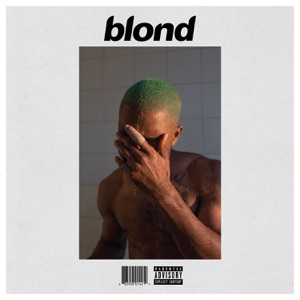

Stewardship
Keeper of the House

leader
Old English lædan, to go before, to show the way. A word about position. The leader is in front.
steward
Old English stīweard, from stig, a hall or a house, and weard, a keeper. The one who keeps the house.
I want the second word. Position is a fact about where you are standing in a room. Responsibility is a fact about what stops working if you walk out of it. I have been more useful holding the second one.
A steward is the roommate who washes the dishes. He books the place, works out who is free which weekend, and sends the third message to the two people who still have not replied.
I do all of that and I like doing it. The part I care about is doing it without keeping a tally. I have watched people handle every detail of a trip and then spend the drive home listing what they handled. The list is the failure. It arrives late and it arrives in front of everybody.
Three places taught me most of this.
Sports
Everyone on that football field was bigger than me, including the kicker. I checked. Freshman year I had never played a down and I was the worst player in the programme, which my friends confirmed at the time and still bring up.
That hurt for about two years, in a small way, every afternoon at practice.
Then I stopped watching the ball. I cannot name the day it happened. A player out there is looking at his assignment, the man across from him, and the next two seconds, which is exactly what he should be looking at. Somebody has to watch the rest of it, and that is usually whoever has the time. I had the time.
Four years of football, three on varsity, a stretch as captain. Track. Lacrosse at USC now, and alumni chair. I was a mediocre athlete through all of it. What I took from it is that a team runs a second job underneath the first one and nobody is assigned to it.
Student government
I was student body president for four terms and I gave the commencement speech. Those are the two lines that fit on a page.
The job was logistics. Finding out which room was free. Asking the teacher who controls that room. Remembering that the custodians have to know before you move two hundred chairs. Chasing a sign-up sheet for a week. Standing in a hallway at seven in the morning so that something could start at eight.
An election gives you a title and nothing else. The rest comes slowly, from people deciding on their own that when you say a thing is handled it is handled. I never found a shortcut to that, and I stopped looking for one.
Relationships
My mother gave me rules and did not present them as optional. Buy flowers when there is no occasion, because an occasion is only a permission slip. Say the compliment out loud instead of thinking it warmly and assuming it arrived. Never go to bed upset, however late that makes the night. Open the door, every time, for the rest of your life.
I send one person a real compliment every day. Specific, unprompted, to somebody who was not expecting anything from me that morning. It takes about eleven seconds.
The harder rule is the one about going wrong. Sit down and work out how much of it is yours. It usually is, partly. It is almost never only yours, which is why the word is we. Take the accountability past the point where taking it still feels good about yourself, and then keep going a little further.
I have loved people who did not love me back the same way. Some people call that a weakness. They may be right, and I would do it again.
If you want somebody to handle the logistics, I am genuinely the person for it. fyruan@usc.edu